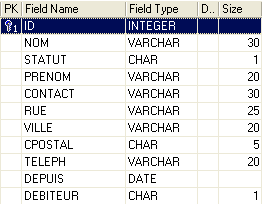
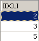
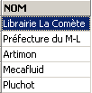

6. Approfondissement du langage SQL
6.1. Introduction
Dans ce chapitre nous présentons
- d'autres syntaxes de la commande SELECT qui en font une commande de consultation très puissante notamment pour consulter plusieurs tables à la fois.
- des syntaxes élargies de commandes déjà étudiées
Pour illustrer les diverses commandes, nous travaillerons avec les tables suivantes utilisées pour la gestion des commandes dans une PME de diffusion de livres :
6.1.1. la table CLIENTS
Elle mémorise des informations sur les clients de la PME :
 |

n° identifiant le client de façon unique - clé primaire | |
nom du client | |
I=Individu, E=Entreprise, A=Administration | |
prénom dans le cas d'un individu | |
Nom de la personne à contacter chez le client (dans le cas d'une entreprise ou d'une administration) | |
Adresse du client - rue | |
ville | |
code postal | |
Téléphone | |
Client depuis quelle date ? | |
O (Oui) si le client doit de l'argent à l'entreprise et N (Non) sinon. |
6.1.2. la table ARTICLES
Elle mémorise des informations sur les produits vendus, ici des livres. Sa structure est la suivante :

n° identifiant un livre de façon unique (ISBN= International Standard Book Number) - clé primaire | |
Titre du livre | |
Code identifiant un éditeur de façon unique | |
Nom de l'auteur | |
Résumé du livre | |
Quantité vendue dans l'année | |
Quantité vendue l'année précédente | |
date de la dernière vente | |
Quantité de la dernière livraison | |
Date de la dernière livraison | |
Prix de vente | |
Coût d'achat | |
Quantité minimale à commander | |
Seuil minimal du stock | |
Quantité en stock |
Son contenu pourrait être le suivant :

6.1.3. la table COMMANDES
Elle enregistre les informations sur les commandes faites par les clients. Sa structure est la suivante :

N° identifiant une commande de façon unique - clé primaire | |
N° du client faisant cette commande - clé étangère - référence CLIENTS(ID) | |
Date de saisie de cette commande | |
O (Oui) si la commande a été annulée et N (Non) sinon. |

6.1.4. la table DETAILS
Elle contient les détails d'une commande, c'est à dire les références et quantités des livres commandés. Sa structure est la suivante :

N° de la commande - clé étrangère référençant la colonne NOCMD de la table COMMANDES | |
N° du livre commandé - clé étrangère référençant la colonne ISBN de la table LIVRES | |
Quantité commandée |
Son contenu pourrait être le suivant :

Ci-dessus, on voit que la commande n° 3 (NOCMD) concerne trois livres. Cela veut dire que le client a commandé trois livres en même temps. Les références de ce client peuvent être trouvées dans la table [COMMANDES] où l'on voit que la commande n° 3 a été effectuée par le client n° 5. La table [CLIENTS] nous apprend que le client n° 5 est la société NetLogos de Segré.
6.2. La commande SELECT
Nous nous proposons ici d'approfondir notre connaissance de la commande SELECT en présentant de nouvelles syntaxes de celle-ci.
6.2.1. Syntaxe d'une requête multi-tables
SELECT colonne1, colonne2, ... FROM table1, table2, ..., tablep WHERE condition ORDER BY ... | |
La nouveauté ici vient du fait que les colonnes colonne1, colonne2, ... proviennent de plusieurs tables table1, table2, ... Si deux tables ont des colonnes de même nom, on lève l'ambigüité par la notation tablei.colonnej. La condition peut porter sur les colonnes des différentes tables. |
Fonctionnement
La table produit cartésien de table1, table2, ..., tablep est réalisée. Si ni est le nombre de lignes de tablei, la table construite a donc n1*n2*...*np lignes comportant l'ensemble des colonnes des différentes tables. | |
La condition du WHERE est appliquée à cette table. Une nouvelle table est ainsi produite | |
Celle-ci est ordonnée selon le mode indiqué dans ORDER. | |
Les colonnes demandées derrière SELECT sont affichées. |
Exemples
On utilise les tables présentées précédemment. On veut connaître le détail des commandes passées après le 25 septembre :
SQL>select details.nocmd,isbn,qte from commandes,details
where commandes.datecmd>'25-sep-91'
and details.nocmd=commandes.nocmd

On remarquera que derrière FROM, on met le nom de toutes les tables dont on référence les colonnes. Dans l'exemple précédent, les colonnes sélectionnées appartiennent toutes à la table DETAILS. Cependant la condition fait référence à la table COMMANDES. D'où la nécessité de nommer cette dernière derrière le FROM. L'opération qui teste l'égalité de colonnes de deux tables différentes est souvent appelée une équi-jointure.
La requête SELECT aurait pu être également écrite de la façon suivante :
SQL> select details.nocmd,isbn,qte from commandes
inner join details on details.nocmd=commandes.nocmd
where commandes.datecmd>'25-sep-91'
Continuons nos exemples. On désire le même résultat que précédemment mais avec le titre du livre commandé, plutôt que son n° ISBN :
SQL>select commandes.nocmd, articles.titre, details.qte
from commandes,articles,details
where commandes.datecmd>'25-sep-91'
and details.nocmd=commandes.nocmd
and details.isbn=articles.isbn

Le même résultat est obtenu avec la requête SQL suivante, moins lisible :
SQL> select details.nocmd,articles.titre,details.qte from details
inner join commandes on details.nocmd=commandes.nocmd
inner join articles on details.isbn=articles.isbn
where commandes.datecmd>'25-sep-91'
Ci-dessus, deux jointures internes sont faites avec la table [DETAILS] :
- l'une avec la table [COMMANDES] pour avoir accès à la date de commande d'un livre
- l'une avec la table [ARTICLES] pour avoir accès au titre du livre commandé
On veut de plus le nom du client qui fait la commande :
SQL>select commandes.nocmd, articles.titre, qte ,clients.nom
from commandes,details,articles,clients
where commandes.datecmd>'25-sep-91'
and details.nocmd=commandes.nocmd
and details.isbn=articles.isbn
and commandes.idcli=clients.id

On veut de plus les dates de commande et un affichage par ordre décroissant de ces dates :
SQL>select commandes.nocmd, commandes.datecmd, articles.titre, qte ,clients.nom
from commandes,details,articles,clients
where commandes.datecmd>'25-sep-91'
and details.nocmd=commandes.nocmd
and details.isbn=articles.isbn
and commandes.idcli=clients.id
order by commandes.datecmd descending

Voici quelques règles à observer dans les jointures :
- Derrière SELECT, on met les colonnes que l'on désire obtenir à l'affichage. Si la colonne existe dans diverses tables, on la fait précéder du nom de la table.
- Derrière FROM, on met toutes les tables qui seront explorées par le SELECT, c'est à dire les tables propriétaires des colonnes qui se trouvent derrière SELECT et WHERE.
6.2.2. L'auto-jointure
On veut connaître les livres qui ont un prix de vente supérieur à celui du livre 'Using SQL' :
SQL>select a.titre from articles a, articles b
where b.titre='Using SQL'
and a.prixvente>b.prixvente

Les deux tables de la jointure sont ici identiques : la table articles. Pour les différencier, on leur donne un alias : from articles a, articles b. L'alias de la première table s'appelle a et celui de la seconde, b. Cette syntaxe peut s'utiliser même si les tables sont différentes. Lors de l'utilisation d'un alias, celui-ci doit être utilisé partout dans la commande SELECT en lieu et place de la table qu'il désigne.
6.2.3. Jointure externe
On veut connaître les clients qui ont acheté quelque chose en septembre avec la date de la commande. Les autres clients sont affichés sans cette date :
SQL>select clients.nom,commandes.datecmd from clients
left outer join commandes on clients.id=commandes.idcli
where datecmd between '01-sep-91' and '30-sep-91'

On est étonné ici de ne pas avoir le bon résultat. On devrait avoir tous les clients présents dans la table [CLIENTS], ce qui n'est pas le cas. Lorsqu'on réfléchit au fonctionnement de la jointure externe, on réalise que les clients n'ayant pas acheté ont été associées à une ligne vide de la table COMMANDES et donc avec une date vide (valeur NULL dans la terminologie SQL). Cette date ne vérifie pas alors la condition fixée sur la date et le client correspondant n'est pas affiché. Essayons autre chose :
SQL>select clients.nom,commandes.datecmd from clients
left outer join commandes on clients.id=commandes.idcli
where (commandes.datecmd between '01-sep-91' and '30-sep-91')
or (commandes.datecmd is null)

On obtient cette fois-ci la réponse correcte à notre question.
6.2.4. Requêtes imbriquées
SELECT colonne[s] FROM table[s] WHERE expression opérateur requête ORDER BY ... | |
requête est une commande SELECT qui délivre un groupe de 0, 1 ou plusieurs valeurs. On a alors une condition WHERE du type expression opérateur (val1, val2, ..., vali) expression et vali doivent être de même type. Si la requête délivre une seule valeur, on est ramené à une condition du type expression opérateur valeur que nous connaissons bien. Si la requête délivre une liste de valeurs, on pourra employer les opérateurs suivants : expression IN (val1, val2, ..., vali) : vraie si expression a pour valeur l'un des éléments de la liste vali. inverse de IN doit être précédé de =,!=,>,>=,<,<= expression >= ANY (val1, val2, .., valn) : vraie si expression est >= à l'une des valeurs vali de la liste doit être précédé de =,!=,>,>=,<,<= expression >= ALL (val1, val2, .., valn) : vraie si expression est >= à toutes les valeurs vali de la liste requête : vraie si la requête rend au moins une ligne. |
Exemples
On reprend la question déjà résolue par une équi-jointure : afficher les titres ayant un prix de vente supérieur à celui du livre 'Using SQL'.
SQL>select titre from ARTICLES
where prixvente > (select prixvente from ARTICLES where titre='Using SQL')

Cette solution semble plus intuitive que celle de l'équi-jointure. On fait un premier filtrage avec un SELECT, puis un second sur le résultat obtenu. On peut opérer ainsi plusieurs filtrages en série.
On veut connaître les titres ayant un prix de vente supérieur au prix moyen de vente :

Quels sont les clients ayant commandé les titres résultat de la requête précédente ?
SQL>select distinct idcli from COMMANDES,DETAILS
where DETAILS.isbn in
(select isbn from ARTICLES where prixvente
> (select avg(prixvente) from ARTICLES))
and COMMANDES.nocmd=DETAILS.nocmd

Explications
- on sélectionne dans la table DETAILS les codes ISBN se trouvant parmi les livres ayant un prix supérieur au prix moyen des livres.
- dans les lignes sélectionnées de l'étape précédente, il n'y a pas le code client IDCLI. Il se trouve dans la table COMMANDES. Le lien entre les deux tables se fait par le n° de commande NOCMD, d'où l'équi-jointure COMMANDES.nocmd=DETAILS.nocmd.
- Un même client peut avoir acheté plusieurs fois l'un des livres concernés, auquel cas on aura son code IDCLI plusieurs fois. Pour éviter cela, on met le mot clé DISTINCT derrière SELECT. DISTINCT de façon générale élimine les doublons dans les lignes résultat d'un SELECT.
- pour avoir le nom du client, il nous faudrait faire une équi-jointure supplémentaire entre les tables COMMANDES et CLIENTS comme le montre la requête qui suit.
SQL> select distinct CLIENTS.nom from COMMANDES,DETAILS,CLIENTS
where DETAILS.isbn in
(select isbn from ARTICLES where prixvente
> (select avg(prixvente) from ARTICLES))
and COMMANDES.nocmd=DETAILS.nocmd
and COMMANDES.IDCLI=CLIENTS.ID

Trouver les clients qui n'ont pas fait de commande depuis le 24 septembre :
SQL>select nom from CLIENTS
where clients.id not in
(select distinct commandes.idcli from commandes where datecmd>='24-sep-91')

Nous avons vu qu'on pouvait filtrer des lignes autrement qu'avec la clause WHERE : en utilisant la clause HAVING en conjonction avec la clause GROUP BY. La clause HAVING filtre des groupes de lignes.
De la même façon que pour la clause WHERE, la syntaxe
**HAVING** *expression opérateur requête*
est possible, avec la contrainte déjà présentée que expression doit être l'une des expressions expri de la clause
**GROUP BY** *expr1, expr2*, ...
Exemples
Quelles sont les quantités vendues pour les livres de plus de 200F ?
Affichons tout d'abord les quantités vendues par titre :
SQL>select ARTICLES.titre,sum(qte) QTE from ARTICLES, DETAILS
where DETAILS.isbn=ARTICLES.isbn
group by titre

Maintenant, filtrons les titres :
SQL> select ARTICLES.titre,sum(qte) QTE from ARTICLES, DETAILS
where DETAILS.isbn=ARTICLES.isbn
group by titre
having titre in (select titre from ARTICLES where prixvente>200)

De façon peut-être plus évidente on aurait pu écrire :
SQL>select ARTICLES.titre,sum(qte) QTE from ARTICLES, DETAILS
where DETAILS.isbn=ARTICLES.isbn
and ARTICLES.prixvente>200
group by titre

6.2.5. Requêtes corrélées
Dans le cas des requêtes imbriquées, on a une requête parent (la requête la plus externe) et une requête fille (la requête la plus interne). La requête mère n'est évaluée que lorsque la requête fille l'a été complètement.
Les requêtes corrélées ont la même syntaxe au détail près suivant : la requête fille fait une jointure sur la table de la requête mère. Dans ce cas, l'ensemble requête mère-requête fille est évalué de façon répétée pour chaque ligne de la table mère.
Exemple
Nous reprenons l'exemple où nous désirons les noms des clients n'ayant pas fait de commande depuis le 24 septembre :
SQL>
select nom from clients
where not exists
(select idcli from commandes
where datecmd>='24-sep-91'
and commandes.idcli=clients.id)

La requête mère s'exerce sur la table clients. La requête fille fait une jointure entre les tables clients et commandes. On a donc une requête corrélée. Pour chaque ligne de la table clients, la requête fille s'exécute : elle cherche le code id du client dans les commandes faites après le 24 septembre. Si elle n'en trouve pas (not exists), le nom du client est affiché. Ensuite, on passe à la ligne suivante de la table clients.
6.2.6. Critères de choix pour l'écriture du SELECT
Nous avons vu, à plusieurs reprises, qu'il était possible d'obtenir un même résultat par différentes écritures du SELECT. Prenons un exemple : Afficher les clients ayant commandé quelque chose :
Jointure

Requêtes imbriquées
donne le même résultat.
Requêtes corrélées
SQL>
select nom from clients
where exists (select * from commandes where commandes.idcli=clients.id)
donne le même résultat.
Les auteurs Christian MAREE et Guy LEDANT, dans leur livre ' SQL, Initiation, Programmation et Maîtrise' proposent quelques critères de choix :
Performances
L'utilisateur ne sait pas comment le SGBD "se débrouille" pour trouver les résultats qu'il demande. Ce n'est donc que par expérience, qu'il découvrira que telle écriture est plus performante qu'une autre. MAREE et LEDANT affirment par expérience que les requêtes corrélées semblent généralement plus lentes que les requêtes imbriquées ou les jointures.
Formulation
La formulation par requêtes imbriquées est souvent plus lisible et plus intuitive que la jointure. Elle n'est cependant pas toujours utilisable. Deux points sont notamment à observer :
- Les tables propriétaires des colonnes arguments du SELECT ( SELECT col1, col2, ...) doivent être nommées derrière le mot clé FROM. Le produit cartésien de ces tables est alors effectué, ce qu'on appelle une jointure.
- Lorsque la requête affiche des résultats provenant d'une seule table, et que le filtrage des lignes de cette dernière impose la consultation d'une autre table, les requêtes imbriquées peuvent être utilisées.
6.3. Extensions de syntaxe
Pour des questions de commodité, nous avons le plus souvent présenté des syntaxes réduites des différentes commandes. Dans cette section, nous en présentons des syntaxes élargies. Elles se comprennent d'elles-mêmes car elles sont analogues à celles de la commande SELECT largement étudiée.
INSERT
INSERT INTO table (col1, col2, ..) VALUES (val1, val2, ...) | |
INSERT INTO table (col1, col2, ..) (requête) | |
Ces deux syntaxes ont été présentées |
DELETE
DELETE FROM table WHERE condition | |
Cette syntaxe est connue. Ajoutons que la condition peut contenir une requête avec la syntaxe WHERE expression opérateur (requête) |
UPDATE
UPDATE table SET col1=expr1, col2=expr2, ... WHERE condition | |
Cette syntaxe a déjà été présentée. Ajoutons que la condition peut contenir une requête avec la syntaxe WHERE expression opérateur (requête) |
UPDATE table SET (col1, col2, ..)= requête1, (cola, colb, ..)= requête2, ... WHERE condition | |
Les valeurs affectées aux différentes colonnes peuvent provenir d'une requête. |